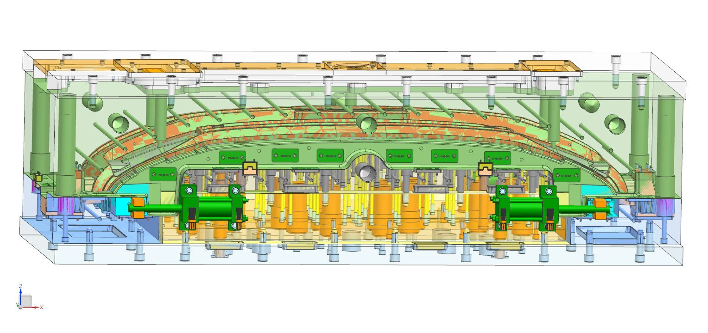

Automotive Bumper Molds
Gege Mould engineers automotive bumper molds for front and rear applications across passenger vehicles and heavy-duty trucks. Our bumper tooling handles large-format parts up to 1,850 mm with multi-cavity configurations, hot-runner sequential valve gating for optimal surface finish, and full PPAP Level 3 documentation. Trusted by OEM supply chains requiring Class-A grained and painted surface quality on every shot.
- Mold size up to 1,850 × 620 × 510 mm
- Hot-runner systems with sequential valve gating
- 4-side slide mechanisms for complex undercut release
- PPAP Level 3 documentation package
- Materials: PP, PP-GF, PC/ABS, TPO